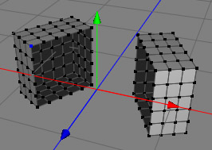

Bridge Tool
The bridge tool is a great time saver if you want to connect two polygon groups. You can perform the same task with the create polygon tool but it will take you much longer.
Modes
The bridge tool is only available in point, edge and polygon mode and can only be applied on raw polygon objects.


Let's assume that you already have a raw polygon object which contains two polygon groups. To connect the two groups chose the bridge tool from the menu bar and select a point on the border of the first polygon group. The selected point will now appear blue (as in the first image). Now click on a point in the border of the second polygon group. Cheetah3D will connect the two polygon groups with a bridge (as in the second image).
 
Keys
- none
Properties
- none